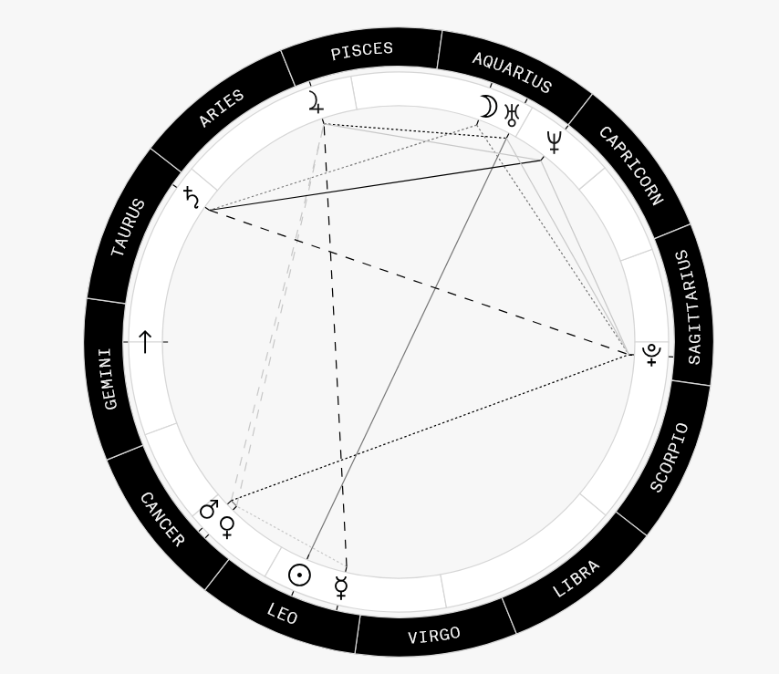

friday
if you're into astrology...
i don't take astrology as objective truth, but i do think it's a fun framework for self-reflection.
every once in a while i'll read a placement and have one of those uncomfortable moments where it feels A LITTLE TOO accurate... so, for anyone who's curious, here's my chart and the interpretations that stuck with me.

chart placements
- sun: leo, 15°34'38", fourth house
- ascendant: gemini, 8°26'20", first house
- moon: aquarius, 18°38'48", tenth house
- mercury: leo, 25°24'57", fourth house
- venus: cancer, 23°49'43", third house
- mars: cancer, 21°54'9", third house
- jupiter: pisces, 27°19'46", eleventh house
- saturn: taurus, 3°34'46", twelfth house
- uranus: aquarius, 10°33'47", tenth house
- neptune: aquarius, 0°21'40", ninth house
- pluto: sagittarius, 5°18'49", sixth house
leo sun (4th house)
this placement isn't just about confidence or wanting attention.
the fourth house shifts that energy toward home, family, and building something that feels personal. i don't really care about being the loudest person in the room. i care a lot more about creating spaces that feel like me.
looking back, that's probably why i spend so much time building little websites instead of chasing social media.
aquarius moon (10th house)
this was probably the placement that called me out the hardest.
instead of immediately feeling emotions, i usually end up analyzing them first. if something hurts, i'm more likely to ask why it hurts than simply sit with it.
i've also always been drawn to learning. psychology, history, computers, philosophy... i tend to disappear into rabbit holes whenever something catches my interest.
the tenth house also ties emotional security to purpose. i feel noticeably better when i'm working toward something.
gemini rising
i'll be honest, i had a bias toward gemini placements because of pop culture. people love to call geminis "two-faced," which i've always found kind of gross. so seeing this in my chart was... unexpected, to say the least.
this is supposedly how other people experience me (ha)
curious. chatty. slightly chaotic. always asking questions. not surprised lol
mercury in leo
this placement explains why i care so much about how things are written.
i'll rewrite a paragraph ten times if it doesn't sound right.
i don't just want to explain something.
i want it to sound like me.
venus in cancer
apparently i express affection through familiarity.
i'm much more likely to show i care by checking in on someone, sharing something interesting, remembering small details, or making something for them than by making grand romantic gestures.
comfort has always mattered more to me than excitement.
things that kept showing up
one thing almost every interpretation mentioned was the tension between my placements.
leo wants to express itself.
aquarius wants independence.
gemini wants to keep learning.
cancer wants emotional safety.
if you want to find your chart too
i used co-star to get mine. you'll need your birth date, birth time, and birth location. take it with a grain of salt, obviously, but it's fun if you like little frameworks for thinking about yourself.
comments 0
no comments yet ♡ be the first to say something nice